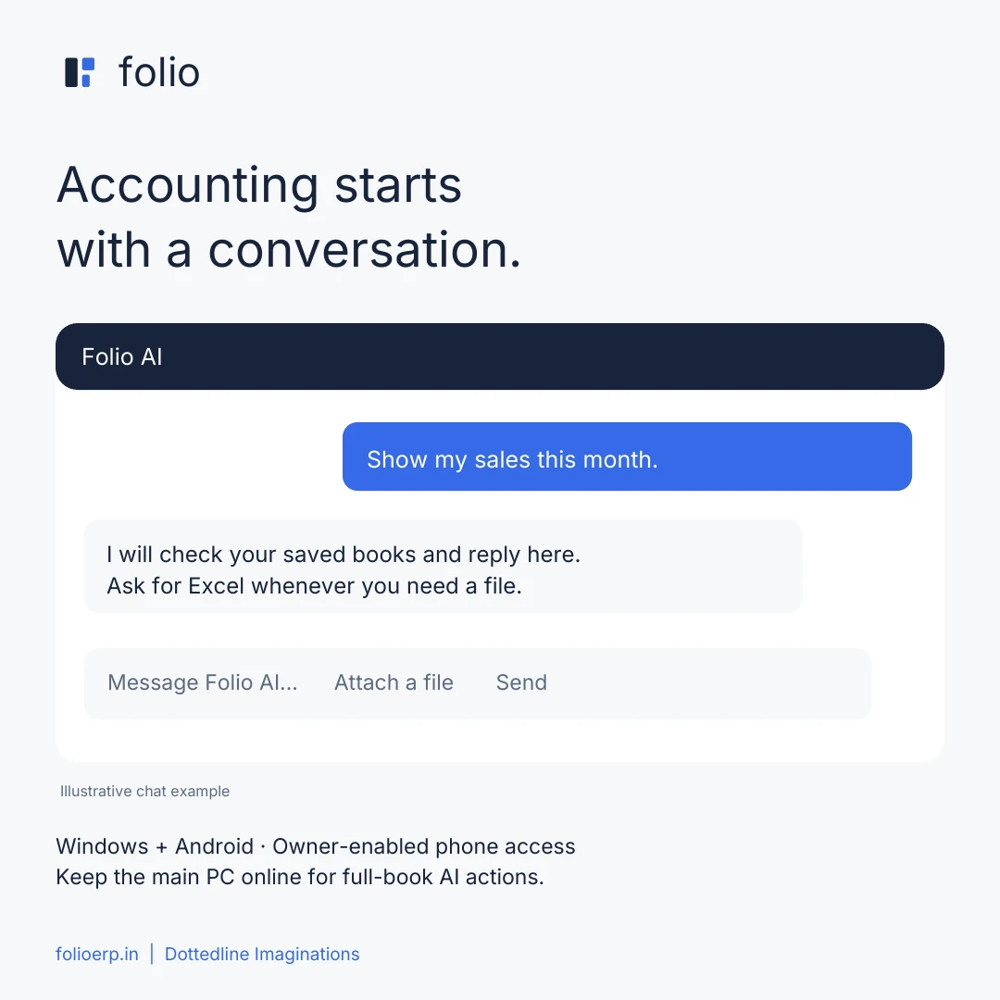
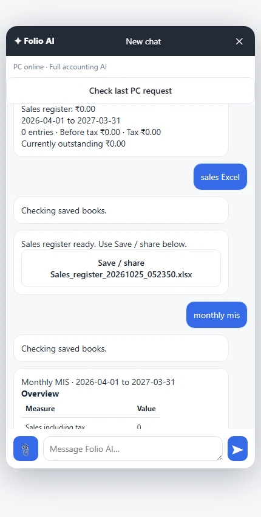
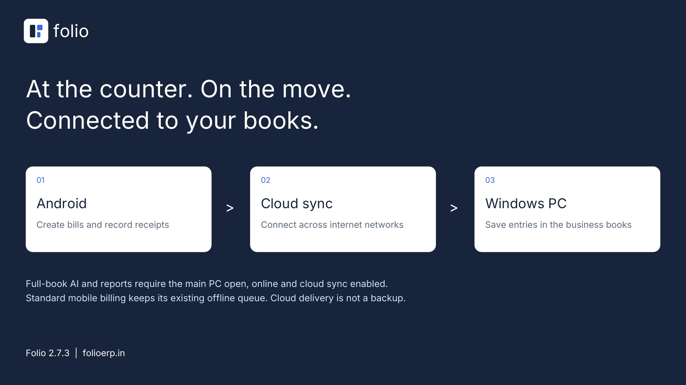

Know where you stand
Sales, trial balance, profit and loss, balance sheet and monthly MIS. See figures in chat; ask for Excel when you need a file.
FOLIO 2.7.3 · WINDOWS + ANDROID
Billing, accounts, stock and AI.
Run your books on Windows and take billing with you on Android.
Free PC software. Free Android app. Only app-to-PC cloud sync is paid.
Every number
tells a story.
A PLACE FOR EVERY DETAIL
Simple daily work. Structured accounts.
Choose a view to see Folio in action.
Create bills, add an item while invoicing, and make your A4 print layout your own. Keep payments and balances close at hand.
View the full feature guide ↗Sales, trial balance, profit and loss, balance sheet and monthly MIS. See figures in chat; ask for Excel when you need a file.
Manage products, materials, prices and GST. Record production, rejects and material usage with recipe support.
Preview and validate supported spreadsheets and data exports before importing them.
MEET FOLIO AI
A floating assistant that works alongside your daily accounting. Ask a question, attach a document or describe an entry.
Ask naturally
“What are my sales this month?” returns figures in chat. “Export that in Excel” gives you a file.
Turn documents into entries
Attach PDFs, photos or supported spreadsheets. Folio asks for missing or ambiguous details before saving.
Work in the real books
Create or edit supported invoices, purchases, receipts, payments, journals and master records. Say “preview” to review first.
AI uses the configured Gemini service and its limits. Review document readings and saved entries. On Android, full-book AI requires paid sync, owner-enabled access and an online PC.

FOLIO IN YOUR HAND
Bill from your Android phone and record the money received. Add paid cloud sync to deliver entries to your PC across different internet networks.
The Android app is free; app-to-PC cloud sync is paid. Keep the main PC open, online and sync enabled for delivery and full-book AI. Offline billing entries wait until they can sync.

OPTIONAL PAID APP-TO-PC SYNC
Android → cloud connection → your Windows PC.
Your existing books stay on the owning PC.

Contact us for a paid sync plan and business activation. The Windows software and Android app remain free.
Use the PC's Mobile sync screen to connect your Android app. Enable full accounting AI only for trusted phone users.
Leave Folio open and online on the main PC. Cloud delivery is not a backup: keep separate copies of your books.
A THOUGHTFUL MOVE TO FOLIO
Import supported Excel, CSV, TSV, JSON, XML and SQLite records with column mapping and validation. Keep a backup and review your data before it enters the books.
Proprietary backups and complex exports may need a separate converter. Available imports depend on the record type.
SIMPLE, CLEAR PRICING
Download and use Folio on Windows and Android for free. Choose paid cloud sync when you want the phone and PC to exchange entries.
Free
Your workspace for billing, accounts, stock and reports.
Get Windows software ↓Free
Android billing and receipts. App-to-PC syncing is a separate paid service.
Get Android app ↓Paid
Connect your phone and PC across internet networks. Contact us for current pricing and activation.
Ask about sync pricing ↗YOUR NEXT CHAPTER STARTS HERE
Download Folio 2.7.3 for free. Add paid app-to-PC sync only when you need the connection.
Free Windows software for billing, stock, accounts, AI and reports. Optional phone-to-PC cloud sync is paid.
Download Windows installer Version 2.7.3 · EXE · 47.6 MB · Opens Google DriveFree Android app for sales and receipts. Connect to your Folio PC through optional paid cloud sync.
Download Android APK Version 2.7.3 · APK · 780 KB · Opens Google DriveYes. The Windows PC software and Android app are free. Only app-to-PC cloud syncing is paid. Contact us for sync pricing and activation.
No. Paid cloud sync works across different internet networks. Keep the main PC open, online and sync enabled to receive entries and run full-book AI actions or reports.
After setup and catalogue sync, standard Android billing can save entries on the phone offline. They wait for a connection and PC acceptance. Cloud sync and AI require internet; full-book phone AI also requires the PC online.
No. Normal questions such as “sales this month” return figures in chat. Ask for Excel to get a file. Android shows a Save / share button so you can choose where it goes.
PDFs or images up to 4 MB. On Android, Excel .xlsx files up to 1 MB with one sheet and up to 300 rows; text CSV, TSV and JSON files up to 100 KB. Split larger work into smaller batches.
Review and map supported Excel, CSV, TSV, JSON, XML and SQLite records. Proprietary or encrypted backups need a format-specific converter. Back up and verify your records before migration.
MIS material-cost estimates use current rates and recorded material usage or recipes. They exclude allocated labour, power and other overheads, so they are not full historical manufacturing costs.
Install the latest APK over the existing app without uninstalling. Install the matching Windows update. For paid sync, activate your business and pair the phone from the PC Mobile sync screen. The owner can enable full accounting AI for trusted phone users.
This release supports Windows and Android. An iPhone app is not included.